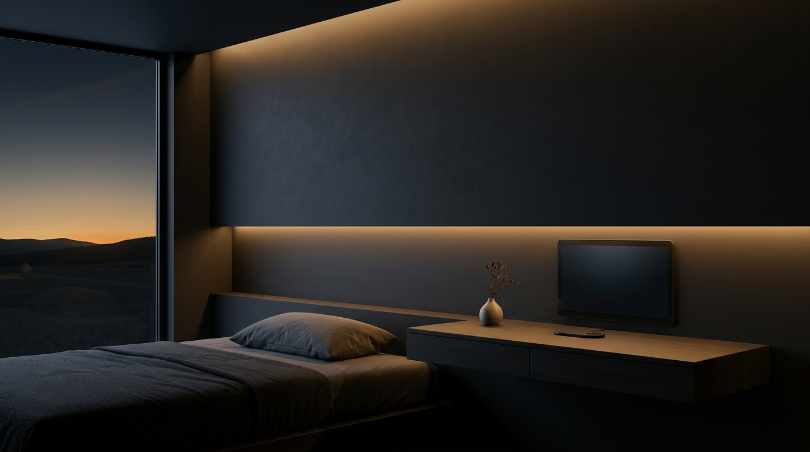

Always-On Clock, Daily Planner & Natural Voice
Built for horizontal Android tablets on a desk or bedside stand, and responsive for portrait phones on the go.
- Two Clean Modes: Switch seamlessly between Clock & Maya focus display and Tasks & Schedule.
- Zero-Scroll Tablet Layout: Designed to fit 1280×800 tablets cleanly with Night Dim and Wake Lock.
Fluent Multilingual Voice & Live News
Speak naturally or type in Slovenian, English, German, and more without clunky language menus.
- Automatic Language Matching: Understands spoken Slovenian diacritics (č, š, ž) and natural conversational tone.
- Clean News Briefings: Summarizes top headlines clearly without reading publisher names or website links out loud.
- 1-Tap Voice Turns & Live Talk: Tap Talk or tap Maya's portrait anytime.

Install on Any Android Tablet in 30 Seconds
Works on Samsung Galaxy Tab, Huawei MediaPad, Lenovo Tab, and Android phones — no app store required.
1. Open in Chrome
Visit your hosted HTTPS link in Google Chrome or Microsoft Edge on the tablet.
2. Install App
Tap Install in the top bar or Chrome's ⋮ menu → Install app for full-screen mode.
3. Allow Mic & Place
Allow microphone permission, rotate horizontal, and enable Night Dim before sleep.
Your Data Stays Strictly on Your Device
Designed from the ground up with local-first ownership and zero tracking.
No IP Logging
Zero server databases, zero telemetry, and private LAN URLs stay restricted to local Wi-Fi.
Local Storage
Tasks, schedule, profile, and conversation logs persist locally on your tablet with text export.
1-Click Erase
Tap Maya · Name → Erase Local Data anytime to wipe every saved record instantly.
Run Locally on Your Own Wi-Fi
Clone from GitHub, add your environment key, and start the production server in four commands: